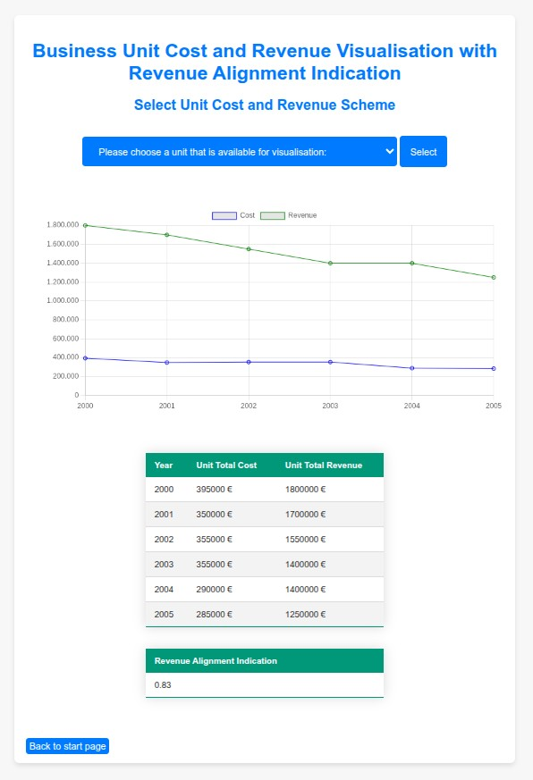

Flask application with sqlite database to analyse cost and revenue data as a support system for pricing
continuous release #descriptive #diagnostic
Sampling is often used to gain insights. Here in this example, six years of sampling is done from different business divisions to analyse cost and revenue. Gross Margin and Markup are calculated according to the formula: Also revenue alignment made available by pearson r correlation and markup stability is show by the inverse of adfuller. It's critical to avoid using var in the existence of market penetration.

Chartjs worked well to present linecharts or multiline charts. Although the chart types were few, they were practical. Within flask statsmodels and scipy is used besides sqlite package inside the venv. Code optimisation isn't done on purpose, so each route part can be just copiable.
Flask application that calculates stationaryness in fragments
continuous release #descriptive #diagnostic
Fixedness in time series data is sought after for various reasons. With the help of linear regression adaptation test we are able measure whether a series of data is stationary or not. However in some kind of datum, specially in long series where underlying changes are inevitable, structural changes occur and overall evaluation might be insufficient. In this study, a more detailed analysis will be attempted by dividing time series into portions and detecting the most steady parts in a time series data. Please upload to evaluate one example excel datasheet.